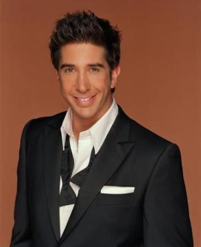

Рос — старший брат Моніки й улюбленець батьків. Це пояснюється тим, що, як спершу вважалося, Джек і Джуді Геллер не могли мати дітей, тож народження Роса стало для них справжнісіньким дивом. У дитинстві Рос і Моніка ввесь час сварилися, та подорослішавши, вони дуже зблизилися. Проте, навіть у такому віці їхні дитячі конфлікти часом нагадують про себе.
